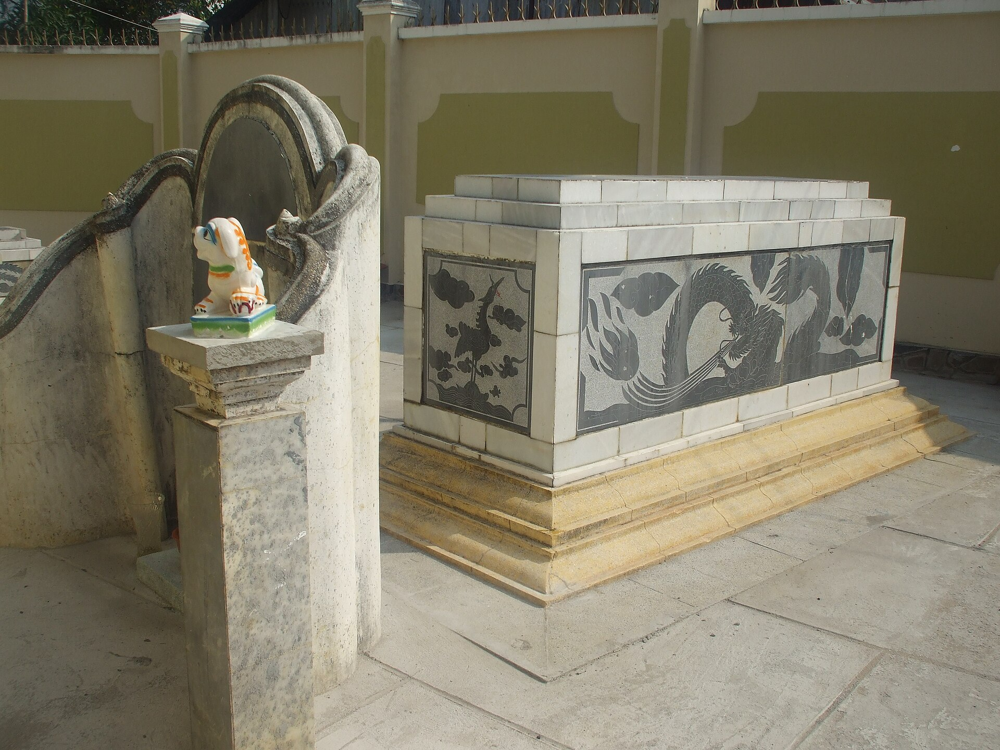
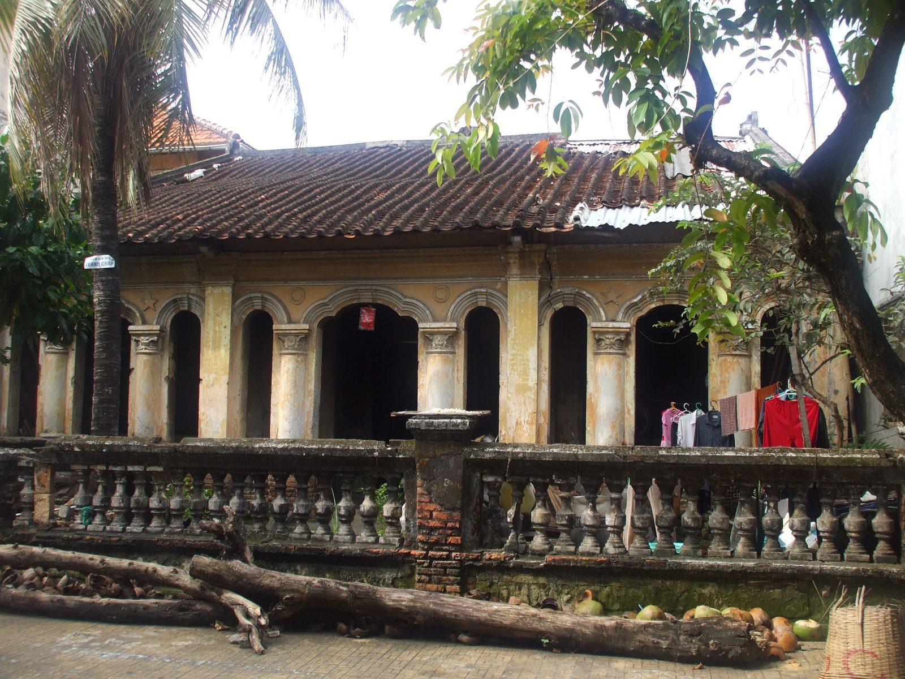
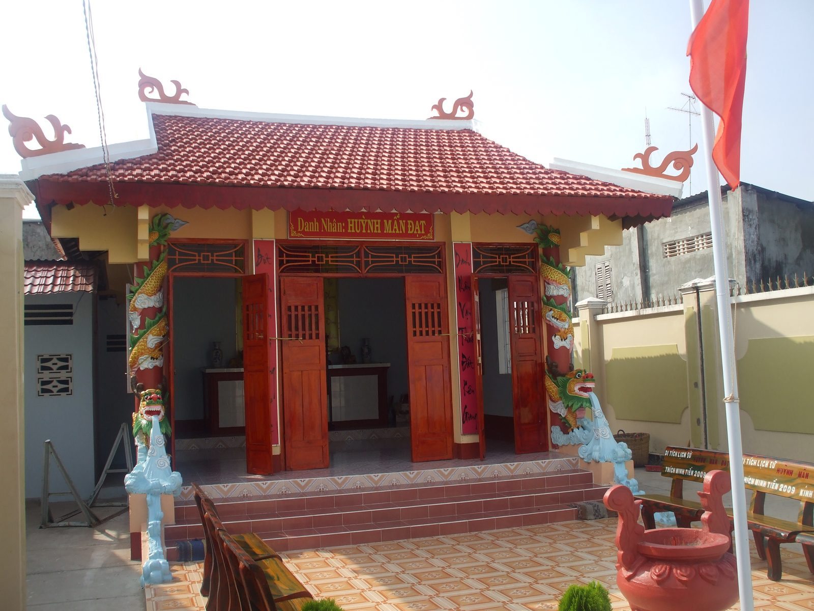
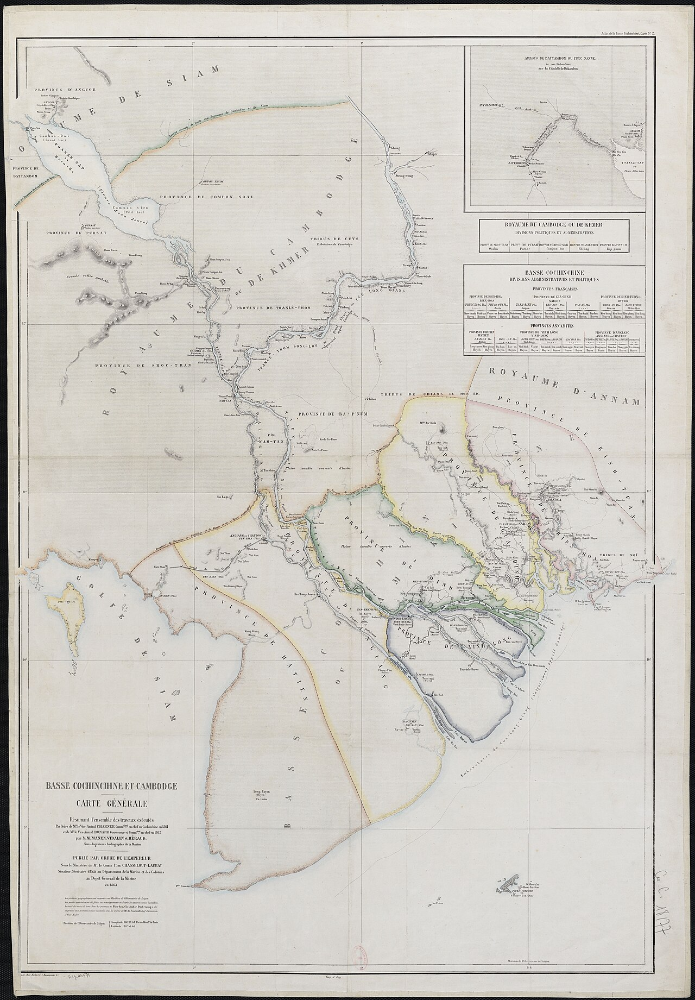

Nhà nho
Đỗ cử nhân năm 1831, từng giữ chức vụ ở Ninh Thái, Hà Tiên và Định Tường trước khi lui về dạy học.
Nam Kỳ · 1807 — 1883
Nhà nho, nhà thơ, nhà giáo. Một đời giữ lửa chữ nghĩa và khí tiết giữa buổi trời Nam đổi sắc.
“Thắng phụ nhung trường bất túc luân,
Điếu Nguyễn Trung Trực — Huỳnh Mẫn Đạt
Đồi ba chỉ trụ ức ngư dân.”
01 Giới thiệu
Huỳnh Mẫn Đạt sống qua những năm tháng quyết định của Nam Kỳ: từ khoa cử triều Nguyễn đến tiếng súng giữ thành, từ chốn quan trường đến bục giảng làng quê.
Ông sinh năm 1807 tại Tân Hội, Tân Long, Gia Định, trong một gia đình nho học. Con đường của ông khởi đi từ cửa Khổng sân Trình, nhưng không khép lại trong phạm vi trường thi. Khi Nam Kỳ lần lượt rơi vào tay thực dân Pháp, nhà nho ấy chọn lui về Rạch Giá, mở lớp dạy học và giữ mạch văn hóa giữa một vùng đất đang đổi chủ.
Người đời nhớ đến ông trước hết qua Điếu Nguyễn Trung Trực — bài thơ chữ Hán khóc người anh hùng đốt tàu giặc trên sông Nhật Tảo. Nhưng đằng sau bài điếu là cả một nhân cách: trọng nghĩa, thương dân, xem khí tiết quan trọng hơn công danh.
Cuộc đời Huỳnh Mẫn Đạt không có nhiều tư liệu chân dung. Điều còn lại là thơ, giai thoại, ngôi mộ, ngôi trường và ký ức của nhiều thế hệ học trò. Trang web này ghép những mảnh ký ức ấy thành một chân dung văn hóa, không phải một tiểu sử tuyệt đối.

Một nhà giáo có thể không để lại tượng đài, nhưng cách ông chọn đứng giữa thời cuộc lại trở thành bài học dài lâu.
Đỗ cử nhân năm 1831, từng giữ chức vụ ở Ninh Thái, Hà Tiên và Định Tường trước khi lui về dạy học.
Thơ chữ Hán cô đọng, nặng tình với dân với nước. Bài điếu Nguyễn Trung Trực là tác phẩm được truyền tụng nhất.
Ông gắn với Rạch Giá qua lớp học, qua mộ phần và qua tên gọi một ngôi trường hôm nay.
02 Tiểu sử
Một dòng thời gian không chỉ ghi năm tháng, mà còn cho thấy những lần con người phải chọn giữa công danh và lòng mình.
Khởi đầu
Huỳnh Mẫn Đạt sinh trong một gia đình nho học ở vùng Tân Hội, Tân Long. Nền học vấn gia đình đặt nền cho con đường khoa cử của ông.
Khoa cử
Ông đỗ cử nhân dưới triều Minh Mạng, mở ra chặng đường làm quan. Đây là dấu mốc được nhiều nguồn tiểu sử ghi thống nhất.
Chức vụ
Ông được bổ dụng qua một số chức vụ ở vùng biên giới phía Tây Nam. Các nguồn ghi khác nhau về chức danh cụ thể, nhưng đều cho thấy ông từng gắn với đất Hà Tiên.
Biên cương
Trong bối cảnh xung đột với Xiêm, ông tham gia công việc phòng thủ và giữ yên vùng biên. Chi tiết về vai trò cụ thể còn được các nguồn địa phương kể lại khác nhau.
Trọng trách
Ông được giao quyền Tuần phủ Hà Tiên. Một số tài liệu ghi địa danh Châu Đốc, phản ánh sự khác nhau trong cách chép sử và biên khảo địa phương.
Biến cố
Ông bị liên can vào một vụ án thuốc phiện và bị cách chức. Nhiều kể lại cho rằng ông chịu án oan, nhưng đây là điểm cần đối chiếu thêm với chính sử.
Thời cuộc
Khi Pháp tấn công Nam Kỳ, vùng đất ông từng gắn bó chịu nhiều biến động. Các trọng trách cũ không còn đủ để xoay chuyển cục diện.
Lựa chọn
Sau khi triều đình nhượng ba tỉnh miền Đông, ông lui về Rạch Giá. Bục giảng trở thành nơi ông giữ chữ nghĩa và nuôi dưỡng học trò giữa buổi loạn ly.
Tác phẩm
Nguyễn Trung Trực bị xử tử tại Rạch Giá. Huỳnh Mẫn Đạt viết bài điếu bằng chữ Hán, khóc người anh hùng và gửi vào đó nỗi đau của cả một vùng đất.
Khép lại
Ông qua đời tại Rạch Giá năm 1883. Phần mộ của ông về sau trở thành một địa chỉ ký ức.
03 Sự nghiệp
Từ nghiên bút đến ấn quan, rồi từ ấn quan trở về bục giảng: mỗi chặng đều cho thấy một cách ứng xử với thời cuộc.
Sự nghiệp của Huỳnh Mẫn Đạt không thể đọc như một bảng thành tích. Đó là chuỗi lựa chọn của một trí thức trước những biến cố vượt khỏi tầm tay cá nhân.
Ông đi qua khoa cử, quan trường, biên cương và chiến tranh. Khi con đường công danh khép lại, ông không chọn im lặng mà chọn dạy học — một cách giữ văn hóa bền bỉ hơn mọi chức tước.
“Công danh là con đường, không phải đích đến.”
Nhận định của người biên soạn
Khoa cử
Đỗ cử nhân năm 1831, ông bước vào hệ thống quan lại triều Nguyễn bằng nền học vấn Nho giáo. Đây là thế giới của kinh sử, lễ nghĩa và những chuẩn mực mà ông mang theo suốt đời.
Quan trường
Các chức vụ ở Ninh Thái, Hà Tiên đưa ông đến vùng đất pha trộn nhiều cộng đồng cư dân. Kinh nghiệm nơi biên cương hun đúc cách nhìn thực tế về dân sinh và an ninh.
Biến cố
Vụ án thuốc phiện năm 1852 chấm dứt con đường hoạn lộ. Dù bị cách chức, uy tín học vấn và nhân cách của ông vẫn đủ để ông tiếp tục được mời dạy học.
Giáo dục
Từ năm 1862, ông mở lớp dạy học tại Rạch Giá. Không còn chức tước, ông vẫn có học trò, có tiếng thơm và có một cách riêng để đối diện với lịch sử.
Lưu ý sử liệu: chức danh “Tuần phủ Hà Tiên” hay “Tuần phủ Châu Đốc”, và mức độ liên can trong vụ án thuốc phiện vẫn có dị bản. Các điểm này được trình bày như vấn đề cần đối chiếu, không phải kết luận tuyệt đối.
04 Đóng góp
Điều Huỳnh Mẫn Đạt để lại không phải một sự nghiệp quan trường lẫy lừng, mà là cách một trí thức giữ chữ, giữ nghĩa và giữ người.

Tư liệuGiáo dục
Sau khi rời quan trường, ông về Rạch Giá mở lớp dạy học. Bục giảng của một nhà nho thất sủng trở thành nơi truyền chữ, truyền lễ và nuôi dưỡng một thế hệ học trò giữa vùng đất mới.
Trong bối cảnh trường học và thi cử Nho giáo dần mai một, lớp học của ông là một cách bảo tồn văn hóa âm thầm nhưng bền bỉ.
Thơ văn
Bài điếu Nguyễn Trung Trực không chỉ khóc một con người. Nó kết tinh nỗi đau của cả một vùng đất trước cảnh mất nước, và biến hành động của người anh hùng thành lời nhắc về khí tiết.
Ký ức địa phương
Mộ phần, nhà thờ và ngôi trường mang tên ông cho thấy ký ức về một nhà nho không chỉ nằm trong sách. Nó đi vào đời sống hằng ngày của Rạch Giá và Kiên Giang.
05 Tác phẩm
Điếu Nguyễn Trung Trực là tác phẩm được truyền tụng nhất của Huỳnh Mẫn Đạt, và cũng là nơi nhân cách của ông hiện lên rõ nhất.
Trang 01 · Phiên âm
Thắng phụ nhung trường bất túc luân,
Đồi ba chỉ trụ ức ngư dân.
Hỏa hồng Nhật Tảo oanh thiên địa,
Kiếm bạt Kiên Giang khốc quỷ thần.
Nhất đán phi thường tiêu tiết nghĩa,
Lưỡng toàn vô úy báo quân thân.
Anh hùng cường cảnh phương danh thọ,
Tu sát đê đầu vị tử nhân.
Bản phiên âm theo cách đọc phổ biến. Một số dị bản có chữ khác ở vài vị trí.
Trang 02 · Chú thích
Trang 03 · Di sản
Bài thơ đặt câu hỏi về thắng thua, nhưng không dừng ở chiến công. Nó chuyển từ chiến trường sang phẩm giá con người, từ cái chết của một anh hùng sang bài học về cách sống.
Chính vì thế, tác phẩm vượt khỏi giới hạn của một bài điếu. Nó trở thành lời nhắc rằng lịch sử không chỉ được viết bằng chiến thắng, mà còn bằng những người dám giữ lòng mình trước cường quyền.
Các dị bản và cách hiểu câu cuối vẫn còn khác nhau; người đọc nên đối chiếu thêm với tư liệu Hán Nôm.
06 Di sản
Một ngôi mộ, một nhà thờ, một ngôi trường và những câu thơ được chép lại: di sản của Huỳnh Mẫn Đạt hiện diện trong đời sống hôm nay theo nhiều cách khác nhau.
Rạch Giá là nơi ông chọn lui về sau những năm tháng quan trường. Ở đó, ông dạy học, viết thơ và chứng kiến những biến cố cuối cùng của một vùng đất. Cũng chính nơi ấy, ký ức về ông được giữ lại qua mộ phần và những câu chuyện truyền miệng.
Năm 1994, khu mộ Huỳnh Mẫn Đạt được xếp hạng di tích. Tên ông sau đó được đặt cho một ngôi trường tại Rạch Giá. Những dấu mốc ấy cho thấy di sản không chỉ là văn bản, mà còn là không gian và tên gọi.

Bản đồ ký ức
Vị trí trên bản đồ là tương đối, dùng để hình dung hành trình lịch sử chứ không phải tọa độ khảo cứu.

Bản đồ Nam Kỳ, tư liệu BnF/Gallica, phạm vi công cộng.Đang tải bản đồ tương tác…
Tư liệu hình ảnh
Nhấn vào ảnh để xem lớn. Mỗi hình đều ghi nguồn và giấy phép.
07 Kết luận
“Thắng phụ nhung trường bất túc luân”
Thắng thua nơi chiến trường không đủ để luận về một con người.
Huỳnh Mẫn Đạt không phải là người chiến thắng trong câu chuyện lớn của thế kỷ XIX. Ông là một nhà nho mất chức, một người thầy ở vùng biên, một người viết điếu cho anh hùng. Nhưng chính ở những vị trí ấy, ông để lại một mẫu người: giữ chữ, giữ nghĩa, giữ lòng trước những điều không thể đổi thay.
Đó là lý do ký ức về ông vẫn cần được kể lại — không phải để tôn thờ quá khứ, mà để hiểu rằng trong mọi thời đại, con người vẫn phải chọn cách đứng trước lịch sử.
08 Nguồn
Trang web tổng hợp từ các nguồn phổ biến và tư liệu hình ảnh có giấy phép rõ ràng. Các điểm còn dị bản được ghi chú thay vì che lấp.
Huỳnh Mẫn Đạt, Wikipedia tiếng Việt. vi.wikipedia.org
Nguyễn Trung Trực, Wikipedia tiếng Việt. vi.wikipedia.org
Quốc sử quán triều Nguyễn, Đại Nam chính biên liệt truyện, bản dịch. Các mục liên quan đến quan chức và biến cố Nam Kỳ thế kỷ XIX.
Trịnh Hoài Đức, Gia Định thành thông chí, bản dịch. Tư liệu nền về đất Gia Định và vùng Nam Kỳ.
Tư liệu về khu mộ và đền thờ Huỳnh Mẫn Đạt tại Rạch Giá, Kiên Giang; thông tin xếp hạng di tích năm 1994.
Wikimedia Commons, các tệp ảnh về Huỳnh Mẫn Đạt, Nguyễn Trung Trực và Rạch Giá. Giấy phép ghi kèm từng ảnh.